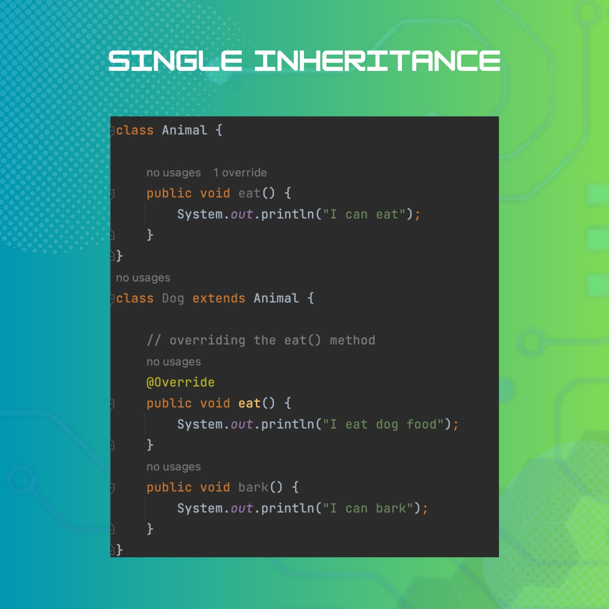
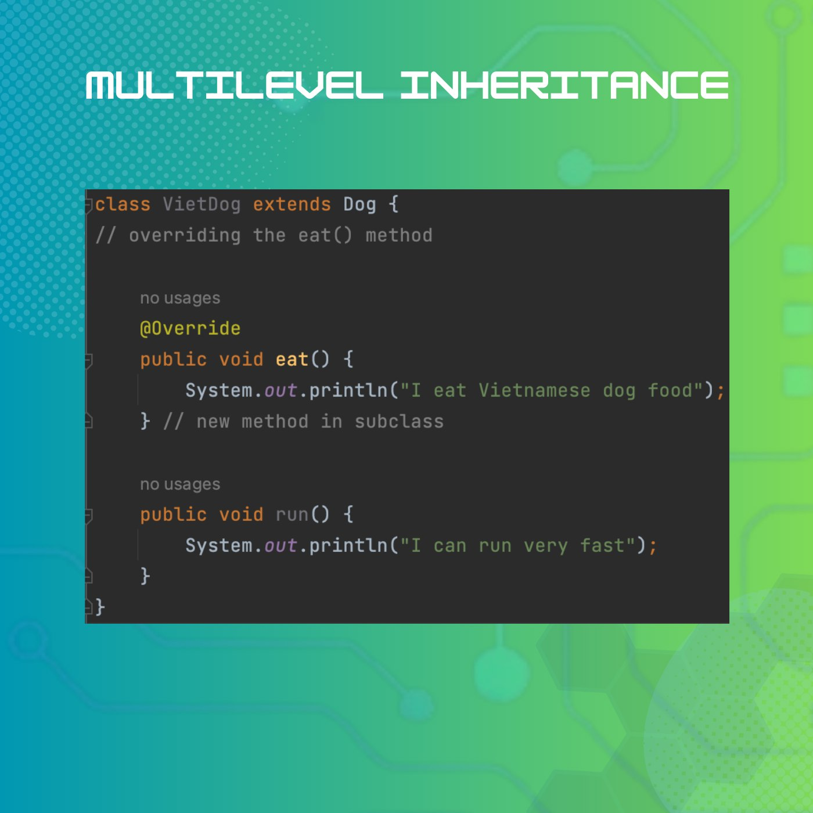
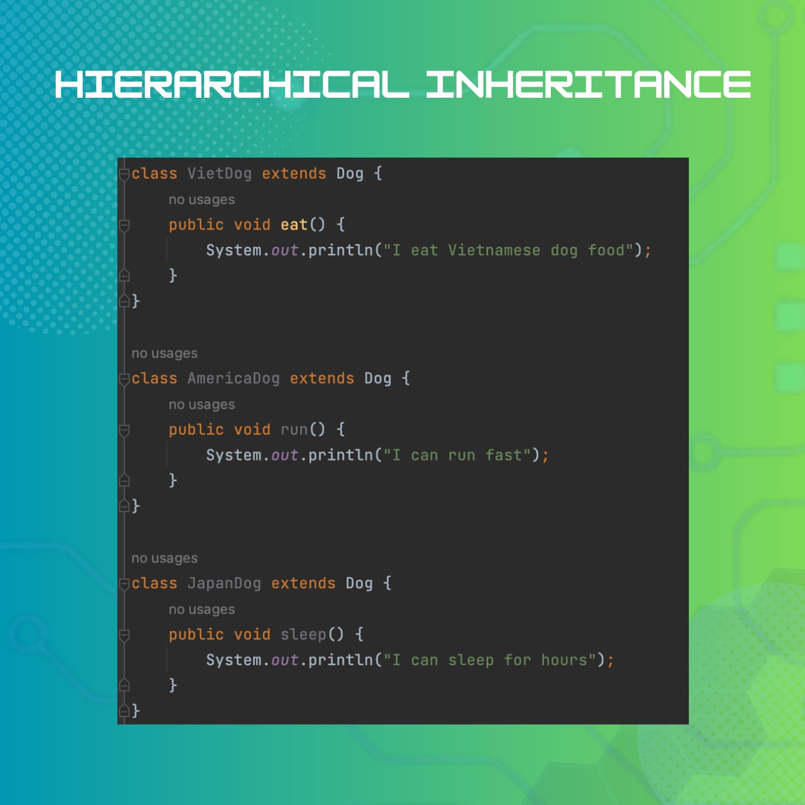
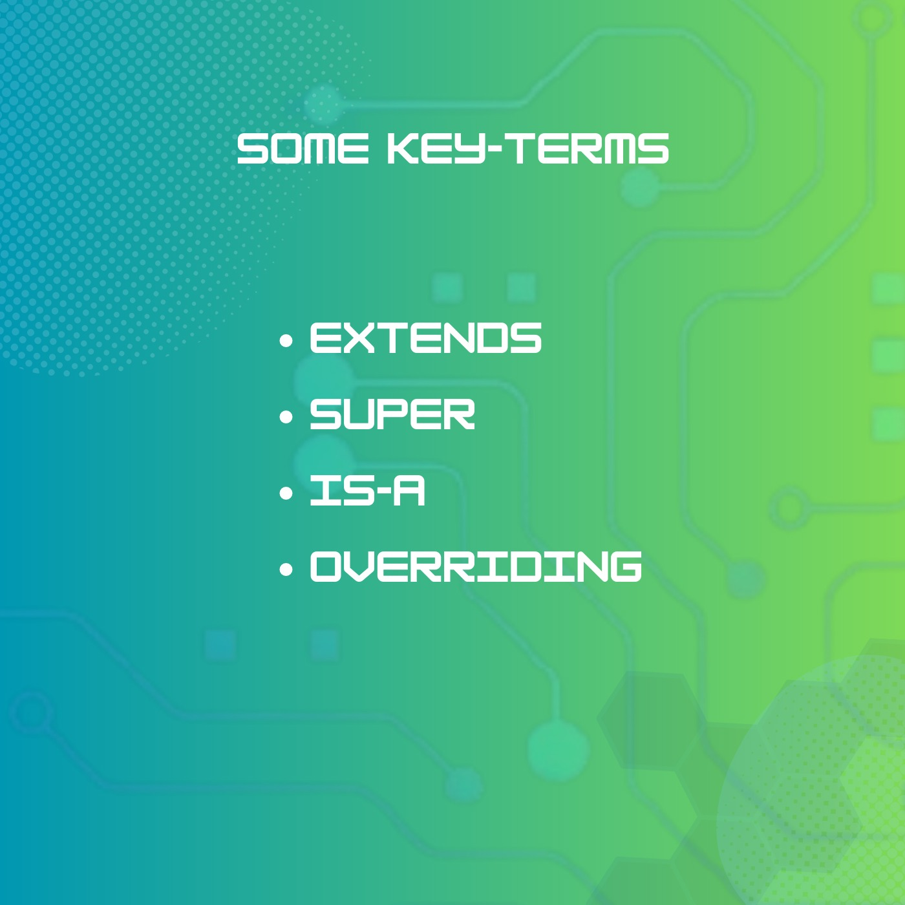

Inheritance (Part 2)
🔰 Tiếp nối phần 1 của Tính kế thừa, hôm nay Main Code sẽ trình bày ví dụ cụ thể để các bạn dễ hình dung về tính chất này trong Lập trình hướng đối tượng với Java nhé!
⭐ Chi tiết nội dung mời các bạn theo dõi qua từng hình ảnh dưới đây 👇
🐶 Như các bạn đã biết, khi class Dog kế thừa class Animal, Dog sẽ tự động có toàn bộ những thuộc tính và phương thức đã được định nghĩa trong Animal.
🐶 Tuy nhiên, chúng ta còn có thể tạo thêm những thuộc tính, phương thức riêng cho lớp con. Ở đây, lớp Dog có một phương thức riêng là bark() để in ra thông báo "I can bark".
🐶 Không chỉ định nghĩa thêm, ta còn có thể định nghĩa lại phương thức có sẵn trong lớp cha. Trong ví dụ này, Dog có cách ăn khác với Animal nói chung. Nó ghi đè phương thức eat() và định nghĩa lại để in ra thông báo "I eat dog food".
Kế thừa đa cấp (multi-level inheritance)
🐶 Ví dụ mình sẽ có thêm class VietDog là để nói về những giống chó ở nước ta. Thì VietDog sẽ extends từ Dog, và Dog extends từ Animal.
🐶 Điều này có nghĩa là lớp VietDog cũng sẽ có tất cả các thuộc tính và phương thức từ cả lớp Dog và lớp Animal.
Kế thừa phân cấp (Hierarchical Inheritance)
🐶 Trong Java, một class con không thể extends từ nhiều class cha, nhưng 1 class cha có thể có nhiều class con, kế thừa phân cấp là như vậy đấy!
🐶 Tiếp tục với những loài chó, thì VietDog, AmericaDog, JapanDog chính là những class con cùng kế thừa class Dog và tạo thành mô hình kế thừa phân cấp:
🔰Tóm tắt một số từ khoá về kế thừa mà bạn cần nhớ:
📌 extends: Từ khóa để chỉ sự kế thừa, cho phép một lớp con kế thừa các thuộc tính và phương thức của một lớp cha.
📌 super: Từ khóa để tham chiếu đến lớp cha gần nhất hoặc gọi phương thức của lớp cha.
📌 is-a: Mối quan hệ giữa hai lớp, trong đó một lớp được coi là một phiên bản cụ thể của lớp khác.
Notice: Cần phân biệt rõ is-a với has-a. Vì has-a là mối quan hệ giữa hai lớp, trong đó một lớp chứa một thành phần của lớp khác như một thuộc tính.
📌 Overriding: quá trình cung cấp một triển khai khác cho một phương thức đã được định nghĩa trong lớp cha. Nó cho phép một lớp con cung cấp sự thực hiện riêng của nó đối với một phương thức kế thừa từ lớp cha.